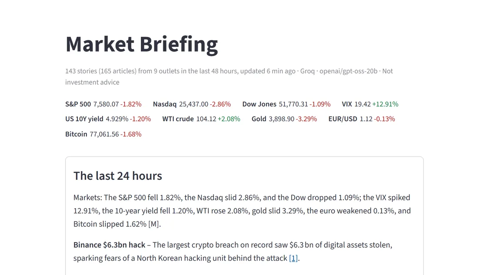
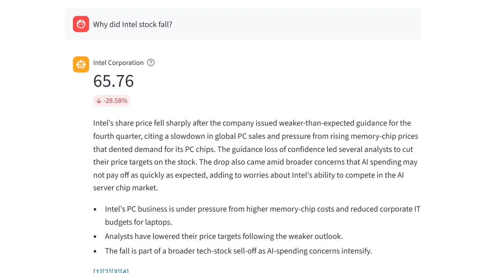

Live
AI · Retrieval
Evaluated
Market Briefing
A chat assistant for the last 48 hours of financial news. Every claim links to its article, prices come from live data, and it says so when nothing was reported. Tested on 40 questions and two models, which changed how it searches.
- 28/28answered with the news
- 8/28without it
- 11news feeds